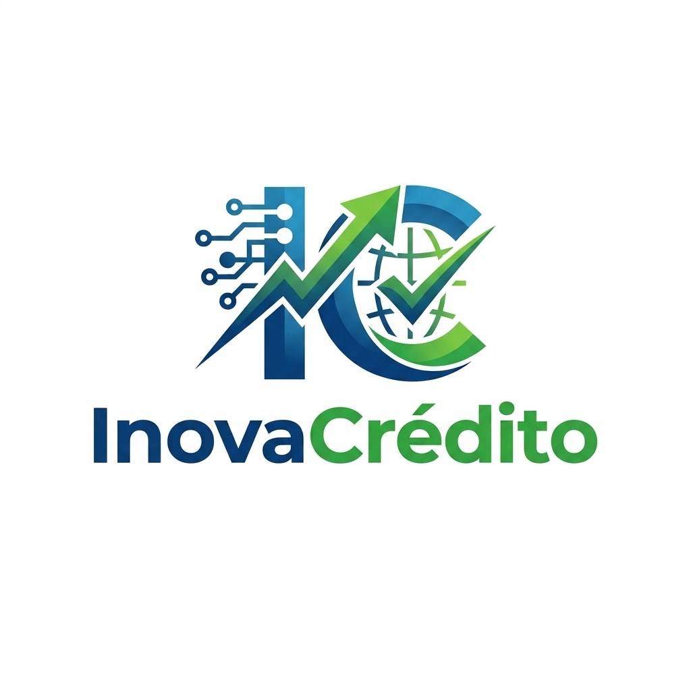
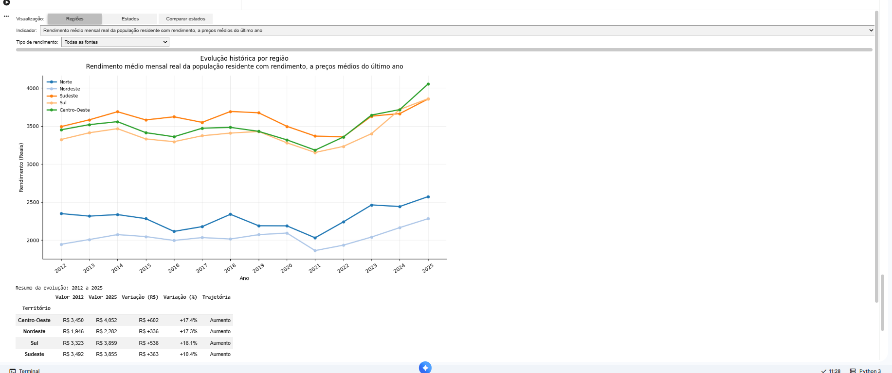
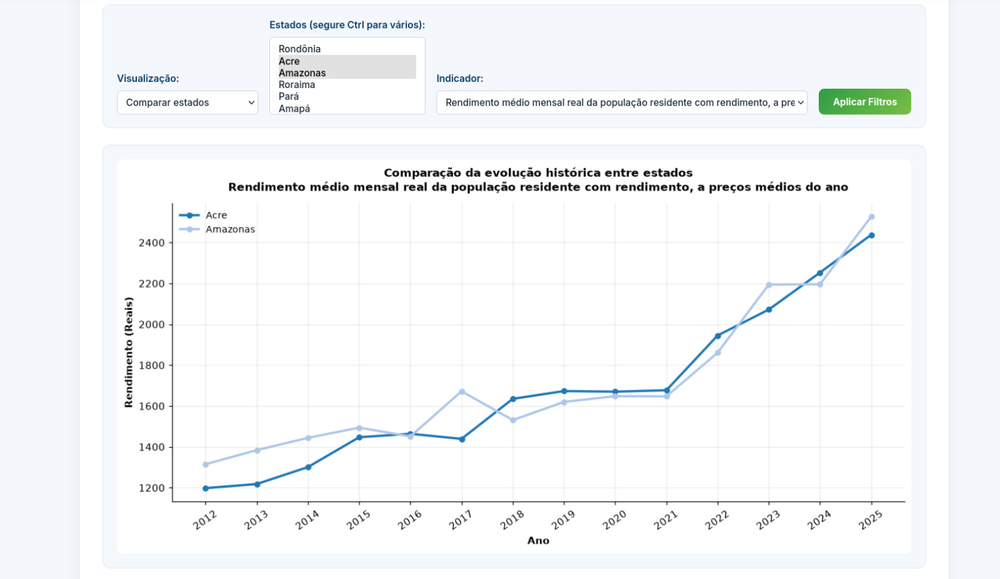

API do 1º semestre · Equipe InovaCredito · Cliente: professor Massanori
Projeto acadêmico voltado a apoiar decisões de crédito mais inclusivas por meio da análise de dados econômicos e da identificação de regiões com potencial de pagamento sustentável.

Problema
Os métodos usados pelos bancos para avaliar riscos muitas vezes acabam dificultando o acesso ao crédito para pessoas que têm condições de pagar suas dívidas. Além disso, a falta de uma análise conjunta entre dados da população e informações sobre endividamento dificulta encontrar regiões onde seria possível oferecer crédito de forma segura e responsável.
Solução
Criação de um site para visualizar dados socioeconômicos. O sistema reúne e organiza informações públicas do Banco Central (SCR) e do IBGE, apresentando gráficos que mostram o crescimento da população, a distribuição de dívidas, as taxas de juros e os índices de inadimplência nos estados brasileiros.
Minha participação
Atuei no back-end, trabalhando na US6, responsável pela análise da evolução histórica da renda das regiões e dos estados. Utilizei Python e Pandas para o tratamento dos dados do Banco Central e do IBGE, além de Matplotlib para a criação de gráficos.
Tecnologias do projeto
Desenvolvido em equipe com Scrum.
Hard skills
Soft skills

